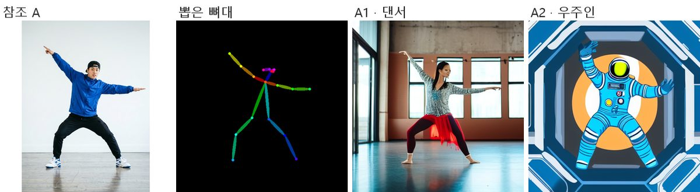
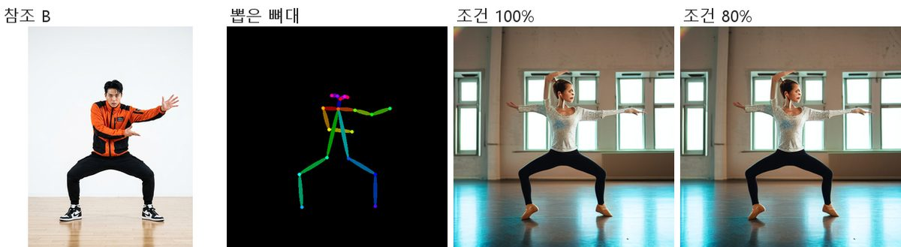
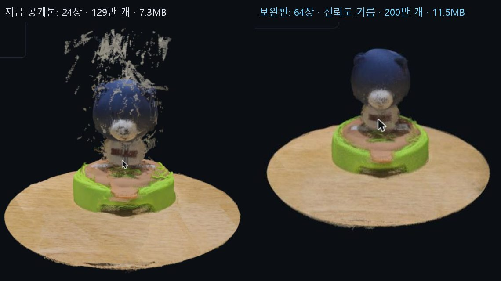
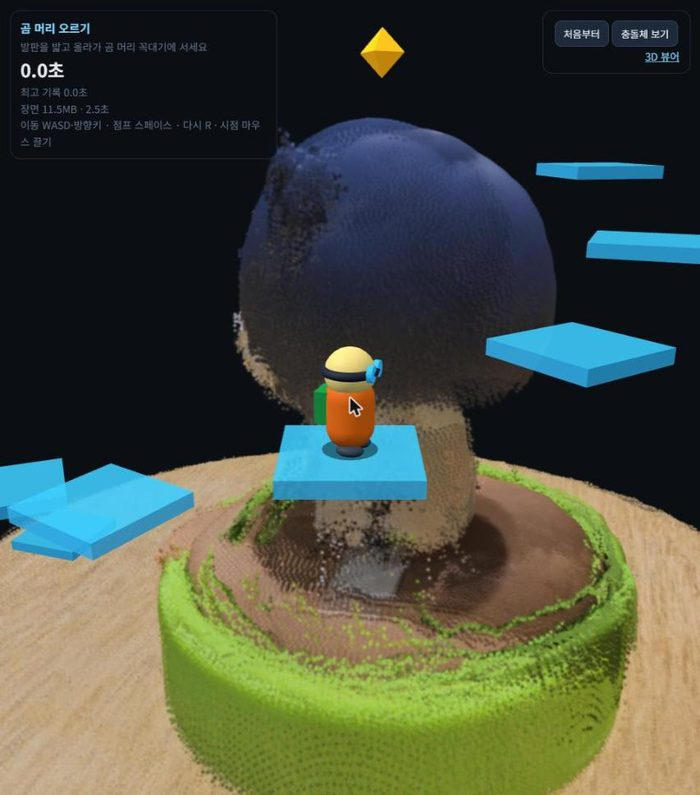

[아이펠 AI에이전트 3기] AI 이해하고 사용하기 ②, 팔이 세 개인 댄서와 3D 곰 피규어 🧸
🎨 ➡️ 🎙️ ➡️ 🧸
안녕하세요! 👋 아이펠 AI에이전트 3기, "AI 이해하고 사용하기" 두 번째 이야기예요.
지난 글이 AI가 읽는 법이었다면, 이번에는 AI가 없던 것을 만들어 내는 법이에요. 포즈를 따라 그리는 그림, 그리고 폰 영상으로 만든 3D 곰 피규어까지! 🧸
1. 이번 주에 배운 것: 만들고, 듣고, 입체로 🎨
| 교안 | 한 줄 요약 |
|---|---|
| 🎨 AI가 없던 그림을 만들어 내기까지 | 노이즈에서 출발해 조건을 따라 그림을 만드는 원리, 그리고 결과·권리 판단은 내 몫 |
| 🎙️ 여러 입력을 한 모델에 넣는다는 것 | 글·그림·소리를 연결하고, 받아쓰기와 요약에서 사라지는 단서를 원본으로 확인하기 |
| 🧸 우리가 사는 3차원은 | 몸을 옮겨 찍은 사진에서 깊이를 얻고, 작은 알갱이(가우시안 스플랫)로 웹에서 둘러보기 |
🎨 그림 주문서에는 여섯 칸이 있어요
"멋진 그림 그려 줘"는 주문서가 텅 빈 거래요. 원하는 장면을 정하려면 여섯 칸을 채워야 해요.
피사체 · 동작 · 카메라 · 조명 · 환경 · 스타일
그리고 결과를 비교할 때는 시드(무작위 출발점)를 고정하고, 한 번에 한 가지만 바꿔야 해요. 여러 개를 한꺼번에 바꾸면 뭐 때문에 좋아졌는지 알 수가 없거든요.
이 원칙, 과제에서 아주 뼈저리게 체감했어요. (아래에서 계속 😂)
🎙️ "제안"이 "결정"으로 바뀌는 순간
멀티모달 수업의 첫 장면이 인상적이었어요.
🗣️ 발언: "출시일을 2주 미루자는 제안입니다."
🖥️ 화면: 출시 일정 검토 · 2주 연기 여부 논의 중
말과 화면 모두 "아직 안 정해졌다"고 말하고 있어요. 그런데 받아쓰기가 "제안"을 잘못 옮기거나, 요약이 화면 단서를 빼먹으면 회의록에는 "2주 연기 결정" 이라고 남을 수 있대요. 😨
💡 HR식으로 이해하기: 인사위원회 회의록에서 "검토하기로 함"과 "결정함"은 완전히 다른 효력이에요. AI 회의록을 쓰더라도 원본 녹음 구간으로 돌아가 확인하는 단계는 꼭 남겨야겠다고 생각했어요.
🧸 그럴듯한 화면 ≠ 확인한 사실
3D 수업의 핵심 문장은 이거였어요. 사진 몇 장으로 만든 3D는 추정한 깊이지 정확한 실측이 아니에요.
화면이 그럴듯해 보여도, 찍지 않은 면은 비어 있고, 크기는 틀릴 수 있어요. 그래서 어디가 복원되지 않았는지, 공개해도 되는지를 근거와 함께 적는 게 과제의 일부였어요.
2. 과제 ①: 원하는 포즈로 그림 만들기 💃
참조 사진에서 사람의 포즈(뼈대) 를 뽑아 조건으로 주고, 같은 자세의 새 그림을 만드는 Colab 튜토리얼을 만드는 과제예요. Stable Diffusion 1.5에 OpenPose ControlNet을 붙여서 진행했어요.
📷 참조 사진 → 🦴 뼈대 추출 → 🎨 뼈대를 따라 생성
# 1) 사진에서 뼈대 뽑기
detector = OpenposeDetector.from_pretrained('lllyasviel/ControlNet')
skeleton = detector(reference).resize((512, 512))
# 2) 뼈대를 조건으로 그리기 (시드 고정, 바꾸는 값은 하나만)
image = pipe(prompt=prompt, image=skeleton, width=512, height=512,
generator=torch.Generator(device='cpu').manual_seed(42),
num_inference_steps=30, guidance_scale=7.5,
controlnet_conditioning_scale=0.8, # 포즈 조건 반영 강도
control_guidance_end=end).images[0] # 1.0 / 0.8로 바꿔 비교🦴 같은 뼈대, 다른 주문 / 다른 뼈대, 같은 주문
시드 42, 스텝 30으로 나머지 조건을 고정하고 비교했어요.
| 결과 | 포즈 | 주문(프롬프트) | 관찰 |
|---|---|---|---|
| A1 | A (팔 벌린 댄서) | 밝은 스튜디오의 댄서 사진 | 벌린 자세는 잘 따라왔지만 얼굴이 작고 흐릿함 |
| A2 | A | 우주정거장의 우주인 일러스트 | 같은 자세의 우주인으로 바뀜 🧑🚀 |
| B1 | B (팔이 몸 앞) | 밝은 스튜디오의 댄서 사진 | 몸 앞을 지나는 팔이 정확히 재현되지 않음 |

🤔 팔이 세 개가 됐어요
B 포즈에서 계속 팔이 세 개처럼 보이는 문제가 생겼어요.
이때 제일 먼저 나눠 본 질문은 이거였어요.
❓ 사진에서 뼈대를 잘못 뽑은 걸까, 뼈대는 맞는데 생성 모델이 잘못 그린 걸까?
그래서 처음 쓰던 역동적인 춤 사진 대신, 배경이 밝고 팔다리가 잘 보이는 사진으로 바꿔서 뼈대부터 확인했어요. 뼈대는 훨씬 알아보기 쉬워졌는데, 그래도 팔은 세 개였어요.
포즈 조건을 끝까지 적용한 것과 80%까지만 적용한 것도 비교해 봤지만 둘 다 팔이 세 개. 😇

💡 배운 것: 뼈대는 생성의 조건이지, 관절을 정확히 고정하는 보장은 아니에요.
💥 개선점은 보이는데, GPU가 없었어요
얼굴과 몸을 더 잘 그리길 기대하며 더 큰 모델(SDXL)을 시도했어요. 가중치 파일 이름 오류를 다른 모델로 바꿔 해결하고 겨우 불러왔는데… 생성 중 Colab 메모리 부족으로 세션이 종료됐어요.
제 노트북에는 GPU가 없어서 로컬에서 대신 돌릴 수도 없었고요.
더 큰 모델로 얼굴과 관절을 다듬는 것처럼 고칠 방향은 보이는데, 그걸 돌릴 환경이 없는 상황이었어요.
그래서 돌아갈 수 있는 SD 1.5에서 조건을 하나씩 바꾼 결과와 어디까지 됐고 어디서 막혔는지를 정리해 제출을 마쳤어요. ✅
솔직히 고백하면, 초반에는 스텝과 강도를 한꺼번에 바꿔 본 결과도 있어서 그건 원인을 하나로 나눌 수가 없었어요. 교안에서 "한 번에 한 변수"를 괜히 강조한 게 아니더라고요. 😅
💡 배운 것: 이미지 생성은 아이디어보다 GPU가 먼저 한계를 정했어요. 12번 교안에서 배운 "실행 위치와 비용"이 남의 얘기가 아니었어요.
3. 과제 ②: 폰 영상으로 곰 피규어 3D 만들기 🧸
이번 주 과제 중 제일 재미있었던 과제예요! 탁자 위 야구 곰 피규어를 폰으로 빙 돌며 찍고, 웹에서 마우스로 돌려 볼 수 있는 3D 장면으로 만들었어요.
📱 영상 촬영 → 🖼️ 선명한 프레임 고르기 → ☁️ 코랩 GPU로 점 복원 → 🫧 점을 알갱이로 → 🌐 웹 뷰어 공개
🖼️ 영상에서 사진 고르기
30초짜리 영상을 24구간으로 나누고, 구간마다 가장 선명한 한 장씩 골랐어요. 손이 흔들린 구간에서도 그나마 덜 흐린 장이 뽑히게요.
복원은 코랩 T4 GPU에서 MapAnything 모델로 했어요. 10번 교안에서 배운 Colab MCP로 Claude Code가 코랩을 직접 다루게 연결했는데, 여기서도 Python 버전 문제로 한 번 막혔다가 3.13을 지정하고 나서야 연결됐어요. (Python 버전, 이번 달 저의 숙적… 🐍)
🫧 1차 → 2차, 무엇이 좋아졌나
1차 결과는 뒤쪽 벽의 점들이 피규어 앞을 뿌옇게 가리고, 머리 위 허공에 줄무늬가 떠 있었어요. 그래서 보완판(2차)을 만들었어요.
| 1차 | 2차 (공개) | |
|---|---|---|
| 사진 | 영상 1편, 24장 | 영상 3편(낮은 각도·메인·위에서), 64장 |
| 허공 점 정리 | 반경·높이 기준을 손으로 정함 | 모델이 준 점별 신뢰도로 거름 |
| 알갱이 | 약 129만 개 | 200만 개 |
| 머리 위 줄무늬 | 남음 | 거의 사라짐 ✨ |
| 정수리·받침대 뒤쪽 | 성김 | 채워짐 |
| 유니폼 글자 "BEARS" | 읽힘 | 조금 더 흐려짐 🥲 |

제일 짜릿했던 순간은 신뢰도였어요. 점마다 모델이 매긴 신뢰도를 저장해서 낮은 점만 따로 그려 봤더니, 정확히 허공 줄무늬와 탁자 아래 잡티였어요.
1차에서 손으로 기준을 만들며 고생하던 일을, 숫자 하나(신뢰도 2 이하 제거)가 깔끔하게 해결했어요.
# build.py (일부) — 점 정리
m = d["conf"] > 2 # 신뢰도 2 이하(허공 줄무늬) 버리기
xyz, rgb = xyz[m], rgb[m]
m = np.linalg.norm(xyz - target, axis=1) < 1.0 # 카메라 시선이 모이는 점에서 반경 1.0만 남기기
xyz, rgb = xyz[m], rgb[m] # → 배경(강아지·액자)도 함께 잘려 나감
r = 1.4 * extent / np.sqrt(len(xyz)) # 점 개수에 맞춘 알갱이 반지름💡 배운 것: 점을 늘린다고 다 선명해지지는 않았어요. 영상 세 편의 카메라 위치가 미세하게 어긋나면 같은 자리에 색이 겹쳐 오히려 글자가 번졌어요.
⚖️ 200만 개 vs 381만 개
381만 개짜리도 만들어 비교했는데, 같은 시점에서 눈으로는 차이가 없었어요. 그런데 PC에서 첫 화면까지는 8.5초 대 4.7초.
알갱이 수는 결국 보는 사람의 기다림과 맞바꾸는 값이라, 200만 개 판을 공개했어요.
📦 같은 장면, 형식만 바꿨더니
| 형식 | 크기 | 원본 대비 |
|---|---|---|
.ply (원본) | 136.00MB | 1배 |
.compressed.ply | 32.56MB | 4.2배 작음 |
.spz | 13.88MB | 9.8배 작음 |
.sog (공개) | 11.55MB | 11.8배 작음 |
원본 PLY는 136MB라 GitHub에 올릴 수조차 없었어요(한 파일 100MiB 제한). 같은 시점에서 PLY와 SOG를 나란히 놓으면 눈으로는 차이를 찾기 어려웠어요.
다른 사람 폰(모바일 데이터)에서도 4.8초 만에 첫 화면이 떴어요. 📱
🔒 공개해도 되는 장면인가
영상 배경에는 집 안 벽, 강아지, 액자, 슬리퍼가 찍혀 있었어요. 피규어 둘레 반경 밖을 잘라 내서 공개 파일에는 피규어와 탁자만 남겼고, 원본 영상은 올리지 않았어요.
처음엔 "벽 점이 가려서" 자른 건데, 자르고 보니 개인 공간을 지우는 일도 함께 해 준 셈이에요.
4. 덤: 곰 머리 오르기 게임 🎮
3D 장면을 만들고 나니 욕심이 생겨서, 추가 서브미션으로 게임을 만들었어요. 작은 캐릭터가 공중 발판을 밟고 곰 머리 꼭대기까지 올라가는 점프 게임이에요. PC와 폰 모두 돼요.

재밌는 사실 하나. 가우시안 스플랫의 알갱이는 그리기만 하고 부딪히지는 않아요. 그래서 장면의 점으로 피규어의 높이별 반지름을 재고, 그 모양대로 보이지 않는 충돌체(원판·원기둥·구)를 겹쳐 놓았어요.
🤖 자동 시험은 통과, 사람은 실패
Claude가 물리만 빨리 돌리는 시험 기능을 만들어, 모든 발판을 자동으로 뛰어 보게 했어요. 가장자리에서 뛰는 경우까지 전 구간 통과! ✅
그런데 제가 직접 해 보니…
🙋 나: 2번째 발판이 너무 멀어서 못 가!
원인을 보니 받침대에서 첫 나선 발판까지 0.16을 올라가야 하는데, 점프 높이가 0.18이라 여유가 0.02뿐이었어요. 자동 시험은 정확한 순간에 뛰니까 통과했지만, 사람에게는 무리였던 거죠.
점프를 조금 높이고 발판 높이를 낮춰서 지금은 끝까지 올라갈 수 있어요. 🏔️
💡 배운 것: 자동 시험이 통과해도 사람이 한 번 해 보는 확인은 꼭 필요해요. 기계가 "할 수 있다"와 사람이 "할 만하다"는 다른 기준이었어요.
마무리 🌱
두 편에 걸친 "AI 이해하고 사용하기"를 한 문장으로 정리하면 이거예요.
🧸 AI가 만든 결과가 그럴듯할수록, 원본으로 돌아가 확인하는 손이 더 필요하다.
팔이 세 개인 댄서, 흐려진 "BEARS" 글자, 자동 시험은 통과했는데 사람은 못 가는 발판까지.
이번 주는 잘 된 것보다 어디가 안 됐는지 정확히 말할 수 있게 된 것이 더 큰 수확이었어요.
HR 앱에도 언젠가 AI 기능을 넣게 된다면, 이번에 배운 질문들부터 꺼내 볼 생각이에요. 데이터는 어디에 남는지, 결과는 무엇으로 확인하는지. 🎯
To be continued… 🏃💨
← 글 목록으로